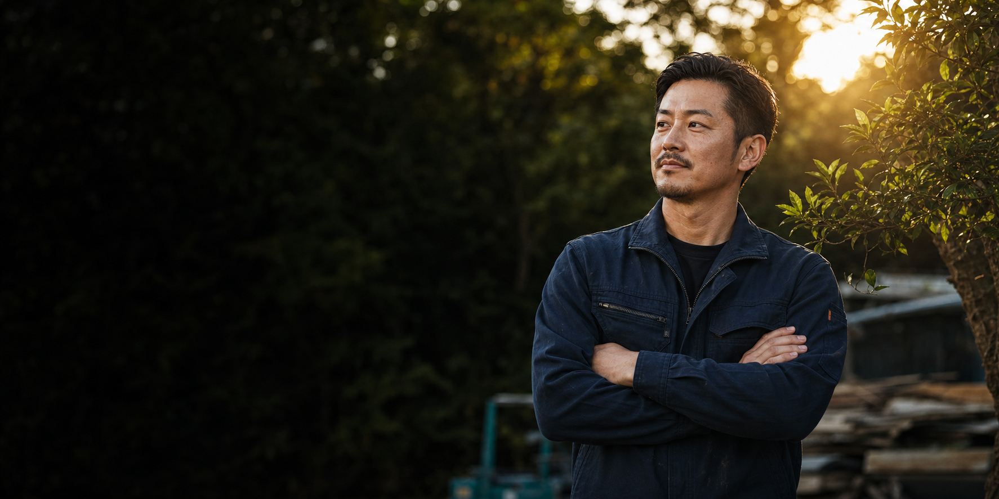

現場を見て判断
樹木、草刈り、外構、足場まで、状況に合わせて必要な段取りを考えます。

SAWADA TOMU GROUP
株式会社STG
それが仕事に表れる。千葉県山武郡横芝光町を拠点に、伐採・草刈り年間管理・剪定・外構・足場仮設まで、現場へ誠実に向き合います。
First Contact
樹木、草刈り、外構、足場まで、状況に合わせて必要な段取りを考えます。
何でもできますではなく、主力業務と対応範囲を分けて分かりやすく伝えます。
電話、LINE、Instagram DMから、相談しやすい方法で連絡できます。
Philosophy
STGの経営理念は、仕事の見え方だけでなく、人としての向き合い方まで含めた判断基準です。
正直であること、信念を持つこと、感謝を忘れないこと。その積み重ねが、現場の品質と会社の未来につながります。
言葉だけで終わらせず、現場の姿勢、仕上がり、人との向き合い方に表れる理念として掲げます。
01曲がったことはしないそれが仕事に表れる
02嘘はつかないそれが人柄を創る
03信念を持つそれが己を強くする
04人への感謝を忘れないそれが未来に繋がる
05だから今の我々が生かされ生きている
曲がったことをせず、仕事のひとつひとつに正直に向き合います。
嘘をつかず、約束と対応の積み重ねで信頼をつくります。
現場で必要な判断を逃げずに行い、自分たちの軸を強くします。
人への感謝を忘れず、次の仕事と未来につなげます。
Services
暮らしと現場の外まわりを、単発作業だけでなく継続管理まで見据えて対応します。
樹木の伐採、抜根、剪定まで、敷地の安全性と見た目を整える作業に対応します。
樹木対応
敷地や施設まわりの草刈りを、年間管理として継続的に整える相談に対応します。
年間管理
雑草対策から外構工事まで、現場の状態に合わせて外まわりを整えます。
外まわり
工事に必要な足場仮設を、現場の安全と作業性を考えながら段取りします。
安全重視電話、LINE、Instagram DMから受付。
場所、作業内容、写真の有無を確認。
安全と作業性を考えて進め方を整理。
仕上がりと次の管理まで見据えて対応。
Strength
理念をきれいな言葉で終わらせず、相談、段取り、作業、片付けまで一つの品質として見せます。
できること、確認が必要なことを分けて、無理な約束をしない姿勢を大切にします。
伐採、足場、外構など、事故を防ぐための準備と現場判断を重視します。
単発作業で終わらせず、草刈り年間管理など次の手入れまで考えます。
お客様、仲間、現場に対して、嘘をつかず感謝を忘れない関わり方を目指します。
掲載候補 01
草刈り年間管理や剪定など、継続して整える仕事を掲載候補にします。
掲載候補 02
安全への配慮、段取り、作業後の整え方が伝わる現場を優先します。
掲載候補 03
見た目の変化と、施工後の扱いやすさが分かる写真を使います。

掲載候補 04安全性、作業性、現場対応力が伝わる案件を掲載候補にします。
Recruit
STGは、代表を中心に7人で現場へ向き合う会社です。条件だけではなく、曲がったことをしない姿勢に共感できる人へ届く求人にします。
ただ作業をこなすのではなく、現場で信頼される人間になりたい人へ。嘘をつかず、感謝を忘れず、信念を持って働ける仲間を求めます。
求人について相談するお客様、仲間、現場に対して、まっすぐな姿勢を大切にする。
仕事の速さだけでなく、事故を防ぐ意識を持つ。
挨拶、報告、片付けまで含めて、現場の品質として考える。
Contact
伐採抜根、草刈り年間管理、剪定、防草シート、外構工事、足場仮設のご相談を受け付けています。メールフォームは受信先メールアドレスの確認後に接続します。